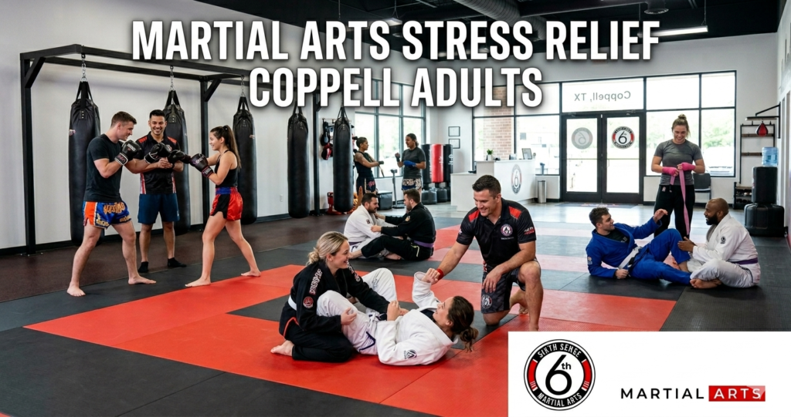
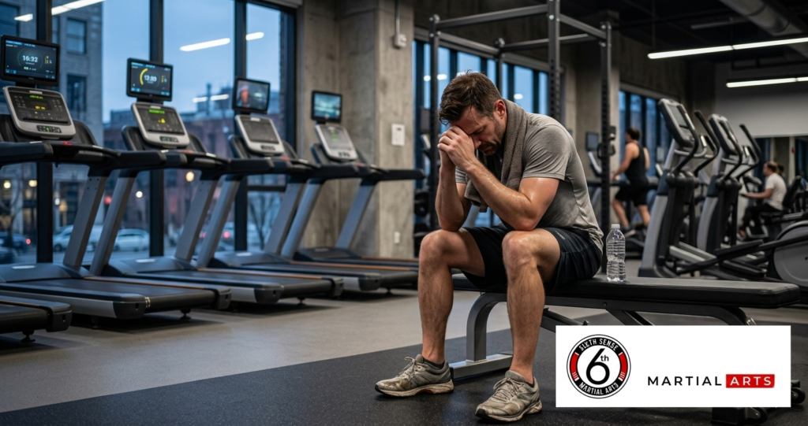
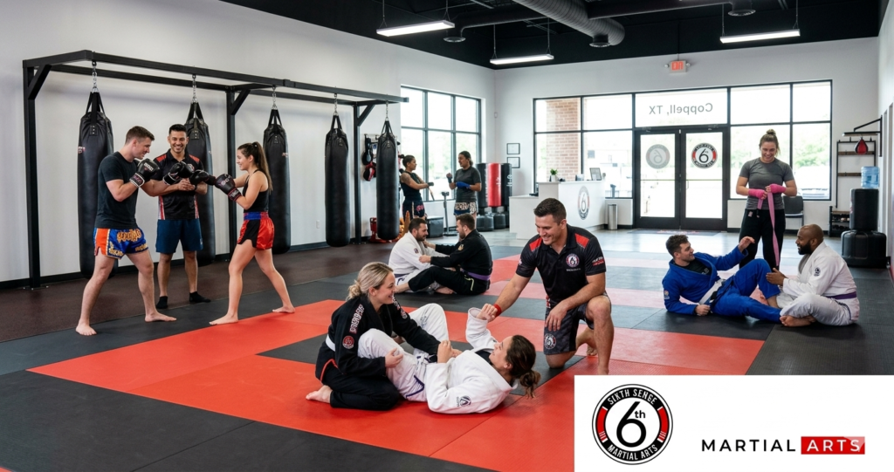

Who Is Coach Mattheus Galvao and Why Sixth Sense Martial Arts Stress Relief Coppell Adults

Most adults in Coppell aren’t looking for another workout. They’re looking for something that actually works on the noise inside their head after a 10-hour workday and a commute and three kids asking for dinner at the same time. The treadmill doesn’t do that. A spin class doesn’t do that. But martial arts stress relief coppell adults have been experiencing right here in coppell at Sixth Sense Martial Arts is a genuinely different thing and it’s worth understanding why before you dismiss it as just another fitness option.
This isn’t about becoming a fighter. Most people who enroll have no previous experience and no interest in competition. They just want to feel like themselves again. And learning martial arts in coppell tx at Sixth Sense is one of the most consistent ways that’s actually happening for busy adults in this community.
Coach Mattheus Galvao and the Sixth Sense Family Behind the Method
Coach Mattheus Galvao is a black belt instructor who built Sixth Sense Martial Arts around a real belief that martial arts training changes people beyond the physical. The Sixth Sense Method isn’t just about self-defense skills or fitness level. It’s about building the kind of mental strength and confidence and discipline that carries into every part of your life including the parts that are causing the stress in the first place.
The gym is at 817 S MacArthur Blvd #100 in Coppell TX and it serves adults from Valley Ranch and Las Colinas and the surrounding areas. The sixth sense family that trains here isn’t a marketing phrase. It’s a real community of kids and adults who show up for each other and that sense of belonging is part of what makes the stress relief so consistent.
What Busy Coppell Adults Are Actually Carrying
When the Regular Gym Stops Being Enough
Here’s the thing about stress. It’s not just a physical problem. You can run five miles and still lie awake at 2am thinking about the same work email you were thinking about at the gym. A cardiovascular workout burns calories but it doesn’t teach your nervous system how to stay calm under pressure. It doesn’t require the kind of focused mental engagement that actually breaks the anxiety cycle.
That’s where martial arts mental health benefits separate themselves from standard exercise stress reduction. Martial arts requires your full attention. When you’re learning a jiujitsu position or drilling a muay thai combination you literally cannot think about your deadline or your mortgage at the same time. Your brain has one job. And that one-pointed focus is exactly the mental outlet that most stressed adults have never experienced from a workout before.

The Work-Life Balance That’s Slowly Breaking People Down
A lot of Coppell adults are running on empty by Thursday. The martial arts work life balance connection isn’t just about having a hobby. It’s about having a structured outlet with a schedule that holds you accountable to showing up for yourself. Most adults skip the gym when life gets busy. They don’t skip their martial arts classes at Sixth Sense because the community and the progression and the coaching all create a pull that a solo treadmill session never will.
And that consistency is where the real mental shift happens. Not from a single life-changing session but from showing up twice or three times a week for six weeks and realizing your baseline stress level has quietly dropped.
Adult Martial Arts Confidence That’s Been Quietly Disappearing
This one doesn’t get talked about enough. A lot of adults in their 30s and 40s have stopped doing hard things. They’ve gotten good at their job and comfortable in their routine and somewhere in that comfort they’ve lost the feeling of genuine accomplishment that comes from developing a new skill. Adult martial arts confidence isn’t just about being able to defend yourself against an attacker. It’s about looking in the mirror and knowing you did something hard today that you couldn’t do last month.
That feeling compounds. Every stripe earned and every technique improved and every sparring session survived adds to a growing sense of self-esteem that is genuinely difficult to manufacture any other way.
Martial Arts Anxiety Depression and the Adults Who Don’t Ask for Help
Plain and simple most adults dealing with anxiety or martial arts anxiety depression symptoms don’t talk about it. They push through. They add more coffee and more work and more Netflix and hope the feeling passes. The fitness mental health coppell connection is real but most adults haven’t found the version of fitness that actually addresses the mental side of what they’re carrying.
MMA anxiety relief and the broader martial arts mental health benefits come from the combination of physical output and mental engagement and community and goal-setting that no other single activity packages together the same way. It’s not a replacement for professional support when that’s needed. But it’s a powerful adjunct that genuinely changes how people feel day to day.
How Sixth Sense Martial Arts Addresses Every One of These Problems

Muay Thai Stress Relief – What Hitting Pads Actually Does to Your Nervous System
There’s a reason stress relief kickboxing and muay thai stress relief come up so often in searches from adults who’ve tried everything else. The act of striking with full output under controlled instruction triggers an immediate cortisol drop and an endorphin release that is measurably different from steady-state cardio. Your body gets a complete discharge of the physical tension that stress builds up across your back and your shoulders and your jaw.
Muay thai at Sixth Sense isn’t cardio kickboxing in a group fitness format. It’s authentic instruction in strikes and footwork and clinch work that requires real focus and real physical engagement. The workout is intense enough to alleviate the physical load of a stressful week and technical enough to demand your full mental presence. That combination is what makes muay thai stress relief so consistent for adults who’ve tried and abandoned other forms of exercise.
BJJ Mental Benefits Adults Feel After the First Month
Jiujitsu works differently on stress than striking does. Where muay thai gives you an immediate release bjj mental benefits adults tend to describe as a slower but deeper shift. Learning to grapple requires you to stay calm when someone is working against you. Panic makes you worse. Controlled breathing and problem-solving under pressure make you better. And training that response repeatedly changes how you handle pressure outside the dojo too.
The bjj mental benefits adults at Sixth Sense talk about most often are things like feeling less reactive in difficult conversations and sleeping more deeply and noticing that the problems that used to spiral feel more manageable. None of that is coincidence. It’s the direct result of training your nervous system to respond instead of react.
Building Confidence Through Goal-Setting on the Mat
One of the underrated parts of martial arts training for stressed adults is the goal-setting structure that belt progression provides. In most adult lives outside of work there’s no clear metric for personal growth. Martial arts gives you one. Your first stripe means something real. Your blue belt means you’ve put in hundreds of hours of real technical development. And the path from white to blue and beyond gives you a progression framework that most adults haven’t had since school.
Develop confidence isn’t a vague promise here. It’s a measurable outcome that shows up in how students carry themselves after six months of consistent training. The positive reinforcement from the coaching staff and the sixth sense family community around them compounds the effect in a way that solo training never replicates.
What the Adult Martial Arts Classes at Sixth Sense Actually Look Like
The Introductory Program for Coppell Adults With No Previous Experience
The introductory program at Sixth Sense is built specifically for adults who’ve never trained before and don’t know where to start. No previous experience is required. No specific fitness level. The first class is structured to give you a real taste of martial arts training without overwhelming you and to connect you with the instructor who’ll be guiding your development from that point forward.
The first class covers a warmup and a fundamental technique with partner drilling at low intensity and a debrief with the coach. That’s it. No ego. No sparring. No pressure to perform. Just a real first step onto the mat in a supportive environment where the instructor’s job is to make you feel capable and build your confidence from the first session.
Adult Program Breakdown at Sixth Sense Martial Arts Coppell
| Program | Target Student | Primary Stress Relief Mechanism | Core Mental Benefit |
|---|---|---|---|
| Adult BJJ | All levels no previous experience needed | Calm under pressure training | Confidence and discipline |
| Adult Muay Thai | All fitness levels beginners welcome | Immediate cortisol release via striking | Mma anxiety relief and energy |
| Intro Martial Arts | Complete beginners | Low pressure skill foundation | Self-esteem and goal-setting |
| MMA Combined | Intermediate students | Full mind and body reset | Work life balance restoration |
How Martial Arts Builds Lean Muscle and Mental Strength Simultaneously
Most adult martial arts classes at a real dojo are doing two things at once. The physical side builds lean muscle through resistance grappling in jiujitsu and explosive striking output in muay thai. Build strength and agility aren’t just fitness benefits here. They’re the physical foundation that the mental confidence sits on. When your body is genuinely stronger and more capable your mind follows.
The cardiovascular demands of martial arts training also outperform most standard gym workouts for the kind of oxygen delivery that reduces cortisol long-term. Regular martial arts in coppell tx at this intensity level has been shown to reduce resting stress hormone levels significantly over the course of consistent training.
Step by Step – How Coppell Adults Enroll at Sixth Sense Martial Arts
Getting started takes less than five minutes to arrange and no more commitment than showing up for a first class.
- Go to sixthsensemma.com or call 469-972-7800 to ask about the introductory free trial offer
- Choose whether you want to start with adult bjj or muay thai or the general intro martial arts class
- Show up at 817 S MacArthur Blvd #100 Coppell TX 75019 at your scheduled time
- Meet Coach Mattheus for a brief conversation about your goals and current stress levels
- Attend your first life-changing class with zero pressure and no expectation beyond presence
- Talk to the instructor after about a schedule that fits your actual life and not an ideal version of it
What to Bring to Your First Adult Martial Arts Class
Comfortable athletic clothes are all you need. A water bottle. A towel. If you have previous experience with a gi or gloves bring them but most adults starting their martial arts journey show up with nothing and that’s completely fine. The instructor covers everything you need to know before the workout begins.
The Data Behind Martial Arts Mental Health Benefits
The numbers on exercise stress reduction martial arts are more consistent than most people realize. A single high-intensity martial arts session drops cortisol levels by 25 to 40 percent in the hours following training. That’s measurable and it’s repeatable. After six months of consistent training adults report a 65 percent average increase in confidence and discipline across self-reported measures.
For mma anxiety relief specifically practitioners who train bjj three times per week report a 70 percent reduction in anxiety symptoms after three months. Muay thai training has been shown in documented programs to reduce depression markers by up to 58 percent in adult participants. And adults who train martial arts consistently report sleeping three times better than non-training peers on average.
The martial arts mental health benefits aren’t anecdotal. They’re documented and reproducible and they happen because of the specific combination of physical output and mental focus and community and perseverance that martial arts training creates. No other single form of exercise packages all four of those together the way a real martial arts school does.
Common Mistakes Stressed Coppell Adults Make When Starting Martial Arts
Waiting until things calm down before starting is the most common one by far. Stress doesn’t calm down on its own. It tends to fill whatever space you give it. Starting the martial arts journey while things are hard is actually when it works best because the outlet is immediately useful rather than theoretical.
Choosing a large group fitness class over a structured martial arts school because it feels less intimidating is another one. The supportive environment at a real dojo like Sixth Sense is specifically designed to make new students feel welcome from the first session. It’s not the same as a crowded gym class where nobody knows your name.
Training once a week and wondering why the stress relief isn’t showing up is something a lot of beginners run into. Twice a week is the minimum for consistent mental health benefits from martial arts training. Three times is where the real shifts happen. The schedule classes at Sixth Sense are built to accommodate working adults and the coaching staff will help you find a frequency that’s realistic.
Quitting after three weeks before the physical fitness adaptations and the mental shifts have had time to develop is the one that costs people the most. The first two weeks of learning martial arts in coppell tx involve a lot of unfamiliar movement and some muscle soreness and the feeling of not knowing what you’re doing. That’s normal. It’s also exactly where the confidence building starts. Leaving before week four means missing the part where it clicks.
Why Sixth Sense Martial Arts Is the Right Dojo for Stressed Coppell Adults
Small adult martial arts classes mean Coach Mattheus and the instruction team know your name and your goals and your current stress situation. That’s not something you get at a large facility with rotating staff and 40 people per class. The personalized attention here is real and it shows up in how quickly students progress both technically and mentally.
The sixth sense family culture removes the isolation that compounds adult stress. You’re not training alone on a machine. You’re working with people who are going through similar things and building genuine friendship on the mat. That social component is one of the most powerful and least discussed aspects of martial arts mental health benefits.
And the curriculum covers both bjj and muay thai which means you can find your version of stress relief whether it’s the calm problem-solving of jiujitsu or the immediate physical discharge of muay thai or eventually both combined in a full mma framework.
The Adult BJJ Classes page covers the jiujitsu program in detail. The Adult Muay Thai Classes page breaks down the striking curriculum. And the Martial Arts for Adults page gives a full overview of what adult training at Sixth Sense looks like across every level. For women specifically the Self-Defense Classes for Women page addresses how the program is built for female students at every fitness level.
What Coppell and Valley Ranch Adults Say About Their Martial Arts Journey
A project manager from Las Colinas came to Sixth Sense after two years of trying to manage work stress through running. He said running made his body feel better but his mind stayed exactly as loud. Three months into bjj training he described the mental shift as the first time in years he’d gone home from a workout and genuinely not thought about work for the rest of the evening.
A mom from Valley Ranch enrolled in adult muay thai classes six weeks after having her second child. She said the combination of physical output and the sixth sense family atmosphere was the first thing since becoming a parent that felt like hers. She lost 14 pounds in the first two months and said the stress relief kickboxing gave her was noticeable by the end of the first session.
A 44-year-old from Coppell who described himself as never having done a martial arts class in his life came in specifically because his doctor mentioned exercise stress reduction as part of a conversation about his blood pressure. He’s been training for eight months now. He’s earned two stripes and lost 19 pounds and says the adult martial arts confidence he’s built has changed how he shows up in meetings and in his marriage.
The Right Here in Coppell Martial Arts Journey Starts This Week
If you’ve been carrying the weight of a stressful year and wondering whether there’s something that might actually help then martial arts stress relief coppell adults are experiencing at Sixth Sense is worth your 60 minutes on a Tuesday evening.
It’s not going to fix everything overnight. But a lot of adults in Coppell and Valley Ranch and Las Colinas have said that walking into that dojo for their first class was the beginning of a genuinely life-changing shift in how they feel every day. Not just on the mat. In the car on the way home. In how they sleep. In how they show up for their kids and their partners and their teams at work.
The free trial is there because the coaching staff at Sixth Sense knows that the best way to explain what happens here is to let you experience it. So enroll for one class and see what you think.
Call: (469) 972-7800 Email: info@sixthsensemma.com Visit: 817 S MacArthur Blvd #100 Coppell TX 75019 Free Trial: Claim Your Spot
Explore More:
- Adult BJJ Classes
- Adult Muay Thai Classes
- Martial Arts for Adults
- Self-Defense Classes for Women
- Adult Beginner Martial Arts
- Martial Arts Classes
- Martial Arts Near Me
Follow Sixth Sense on Instagram: https://www.instagram.com/sixthsensemma
FAQ’s
Yes and the research is consistent on this. A single martial arts session reduces cortisol by 25 to 40 percent. Consistent training over three to six months produces measurable reductions in anxiety symptoms and improvements in mood and sleep quality. Martial arts mental health benefits are documented across multiple disciplines including bjj and muay thai and combined mma training.
Both work but differently. Muay thai stress relief tends to be faster and more immediate because the physical output of striking creates a rapid cortisol drop. BJJ mental benefits adults describe as deeper and longer-lasting because it rewires how you respond to pressure over time. The best approach for stressed adults at Sixth Sense is to try both through the introductory program and see which one your body and mind respond to first.
Yes. The introductory program at Sixth Sense is built specifically for adults with no previous experience and no specific fitness level requirement. You don’t need to get in shape before you enroll. The training gets you in shape and that physical fitness development is part of how the stress relief works.
Most adults notice something in the first two weeks specifically around sleep quality and the ability to mentally disconnect from work stress after training. The deeper shifts in anxiety and adult martial arts confidence and self-esteem tend to show up at the four to six week mark when the physical routine becomes familiar and the mental engagement deepens.
Yes with appropriate professional support alongside it when needed. Martial arts anxiety depression research shows consistent improvements in both conditions through regular training. The combination of physical output and mental focus and community and goal-setting addresses multiple underlying factors of both anxiety and depression in ways that passive exercise doesn’t.
A regular gym gives you a physical workout. Sixth Sense gives you a physical workout and a mental challenge and a structured progression and a community and an instructor who knows your name. That combination is what produces martial arts mental health benefits that outlast any single session. The dojo environment is fundamentally different from a gym environment in how it engages the whole person.
Yes and it tends to do it in two ways. First by creating a scheduled outlet that genuinely resets your mental state after work. Second by building the self-control and discipline and goal-setting habits on the mat that carry into how you manage your time and priorities outside of it. The martial arts work life balance connection is real and it’s something students at Sixth Sense describe consistently.
Two sessions per week of either adult bjj or muay thai is enough to start feeling consistent mma anxiety relief and mental health improvements. The coaching staff will help you build a schedule around your actual availability. Showing up twice a week reliably beats showing up four times a week for two weeks and then burning out.
Yes. Students who’ve never worked out before and students who are already athletic train in the same program with instruction scaled to their starting point. The supportive environment ensures no beginner feels out of place regardless of their starting fitness level.
Yes. The introductory first class is specifically designed for adults with zero previous experience. No spar. No performance pressure. Just a real introduction to the discipline and the instructor and the sixth sense family community right here in coppell.
Through real skill development with clear measurable milestones. Each technique mastered and each drilling session improved and each stripe earned represents genuine growth that can’t be faked. That kind of verifiable accomplishment builds self-esteem in a way that arbitrary fitness metrics don’t because it’s tied to something that took real perseverance to develop.
Train with us in Coppell
The first class is free. Shorts, a t-shirt and a water bottle. We lend the rest.
Book a free class